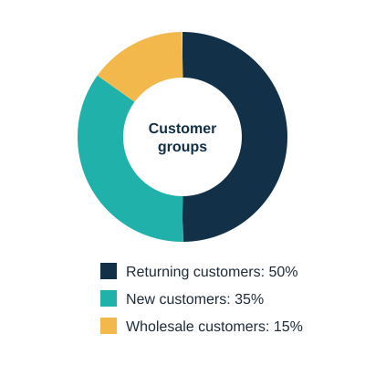
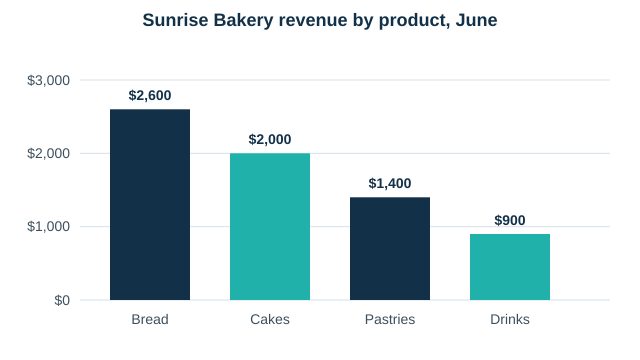

Data Basics for Small Businesses
You do not need advanced software or a statistics degree to use data well. You need good questions, a few clear numbers and the habit of checking them regularly. This page covers the three kinds of data every small business already has: customers, sales and products.
Know your customers
Every sale tells you something about the person who made it. Customer data answers questions such as how often people buy, how much they spend and whether they return. Businesses often find that a small group of loyal customers brings in most of their income, which makes keeping them happy very valuable.

Track your sales
Sales data is the easiest place to start because most businesses already record it. Write down the number of orders and the total revenue for each month, then work out the average order value by dividing revenue by orders. Watching these three numbers together shows whether growth comes from more customers, bigger orders or both.
| Month | Orders | Revenue | Average order value |
|---|---|---|---|
| January | 120 | $4,200 | $35.00 |
| February | 128 | $4,800 | $37.50 |
| March | 118 | $4,500 | $38.14 |
| April | 140 | $5,600 | $40.00 |
| May | 148 | $6,100 | $41.22 |
| June | 160 | $6,900 | $43.13 |
In March the bakery had fewer orders than in February, yet the average order value still rose. That tells the owner that customers were spending more each visit, even though fewer of them came.
Compare your products
Product data shows where your money really comes from. A product that sells often but earns little profit may not deserve the shelf space it takes. A product that sells slowly but earns a high profit may deserve more promotion.

A simple four-step process
- Ask a question. For example, "Which product should I promote this month?"
- Collect the data. Gather only the numbers that help answer that question.
- Analyze it. Compare months, products or customer groups, and use a chart if it helps.
- Act and check. Make one change, then look at the numbers again to see whether it worked.
Ready for the next step? Browse the key business metrics or practice with the profit margin calculator.